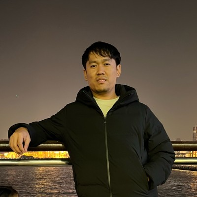

24S Energy
กราฟิกและเว็บไซต์สื่อแคมเปญสินค้าและการนำเสนอผ่านช่องทางดิจิทัล
- ภาพสินค้าและสื่อโซเชียลมีเดียสำหรับ KSTAR, Solplanet, Sunwoda และ TCL
- เลย์เอาต์เว็บไซต์องค์กรและหน้าสินค้า ทั้งรูปแบบเดสก์ท็อปและมือถือ
MULTIMEDIA DESIGNER

ผมทำงานออกแบบกราฟิก โมชันกราฟิก ตัดต่อวิดีโอ และเลย์เอาต์เว็บไซต์ ชอบคิดไอเดียและประยุกต์เครื่องมือให้เหมาะกับโจทย์ รวมถึงใช้ AI เป็นส่วนหนึ่งของขั้นตอนการทำงาน สื่อสารตรงไปตรงมา วางงานเป็นขั้นตอน และรับผิดชอบงานที่ได้รับ เข้ากับคนได้ง่ายและชอบแลกเปลี่ยนความคิดเห็นกับทีม
กราฟิก / โมชัน / สื่อดิจิทัล
สื่อแคมเปญสินค้าและการนำเสนอผ่านช่องทางดิจิทัล
ผลิตภัณฑ์ด้านพลังงานและสื่อประชาสัมพันธ์
SUNWODA Thailand · Sustain Asia Week 2024
เซี่ยงไฮ้ · มัลดีฟส์
งาน 3D / การผลิตเกม / VFX
Jumbo Jumps
เม.ย. 2024–2026 · ทำงานแบบไฮบริด
ผลิต VFX สำหรับเกมมือถือ ด้วย Unity VFX Graph ระบบอนุภาค และเอฟเฟกต์เรียลไทม์
Jumbo Jumps
ต.ค. 2019–มี.ค. 2026 · 6 ปี 6 เดือน · กรุงเทพฯ ประเทศไทย
นำการผลิตงาน 3D ทั้งโมเดลตัวละคร งานสภาพแวดล้อม และทิศทางภาพ
True Axion Interactive
พ.ค. 2017–ต.ค. 2019 · 2 ปี 6 เดือน · กรุงเทพฯ ประเทศไทย
สร้างแอสเซ็ต 3D สำหรับเกมและโปรเจกต์อินเทอร์แอ็กทีฟ
BUMBLISS COMPANY LIMITED
พ.ย. 2015–มี.ค. 2017 · 1 ปี 5 เดือน · กรุงเทพฯ ประเทศไทย
สร้างโมเดลและแอสเซ็ต 3D สำหรับโปรเจกต์เชิงพาณิชย์
Bohemia Interactive
มี.ค. 2014–ต.ค. 2015 · 1 ปี 8 เดือน · พัทยา ชลบุรี ประเทศไทย
ออกแบบสภาพแวดล้อมและดูแลด้านภาพสำหรับเกม AAA ในแบรนด์ Arma และ DayZ